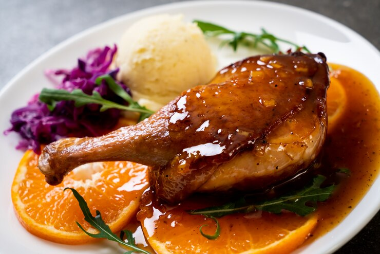

Duck Leg Steak
Duck leg steak is quick and easy to make with just a handful of everyday ingredients. It’s perfect for warm-weather picnics, potlucks, lunches, or light dinners.
Ingredients
- 2 duck legs (skin-on, bone-in)
- Salt and black pepper
- 2 cloves garlic (crushed)
- 2 sprigs thyme or rosemary
- 1 tbsp olive oil or duck fat
- 1 tsp lemon juice or balsamic vinegar
- 1 tsp honey or soy sauce (optional for glaze)
Steps
- Prep the duck legs: Pat dry and score the skin. Season with salt and pepper.
- Sear skin side down: Place duck legs in a hot pan (no oil needed if fatty). Cook 6–8 mins.
- Flip and add flavor: Add garlic, herbs, and oil/fat. Cook another 4–5 mins.
- Optional glaze: Brush with honey or soy sauce in the final minute.
- Finish in oven: Bake at 180°C (350°F) for 10–15 mins if legs are thick.
- Rest and serve: Let rest 5 mins. Drizzle with lemon juice or balsamic vinegar.
- Enjoy!